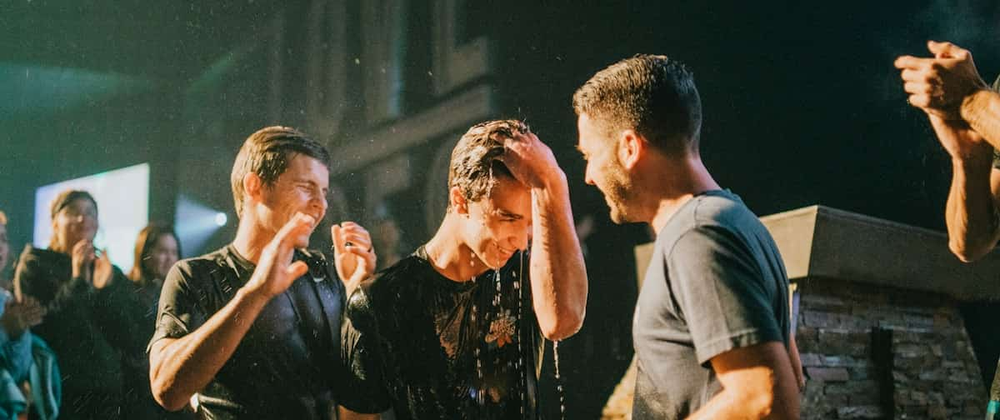

Four steps, in order, and nobody is checking whether you have done them.

Every volunteer working with under-18s is background-checked before their first shift and re-checked every two years. Two unrelated adults are in every room, every time. Check-in is coded and nobody but you can collect your child.
If something concerns you, tell any staff member or email our safeguarding lead directly. We will take it seriously and we will tell you what we did about it.